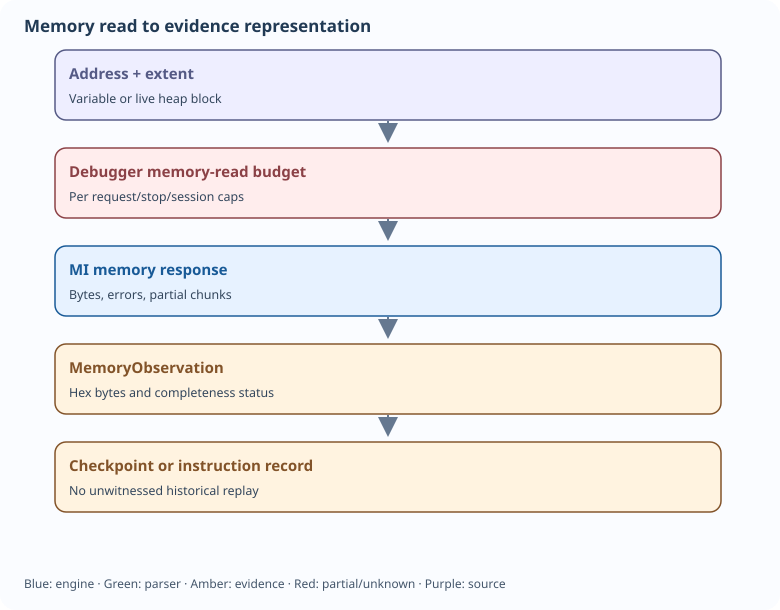

26 · Recorder, resident accounting, and journal append #
Key terms #
| Term | Plain meaning |
|---|---|
| Checkpoint | A saved view of the program at a particular observed stop, including bounded variables and heap state. |
| Gap | An explicitly marked stretch whose exact instruction events were not retained. It is not a guessed list of instructions. |
>
The big picture #
src/recorder.rs is the engine's write boundary for retained observations. It owns the resident RecordingData, a create-new JSONL Journal, the resident-byte counter, the disassembly cache and per-journal counters. It also performs the bounded stopped-inferior byte reads for variables and configured memory regions. It does not decide when a source checkpoint is semantically warranted; run_gdb_phase does that.
Construction and resident accounting #
Principal type: Recorder { data, config, limits, cache, journal, resident, module_epoch, journaled_allocations } (src/recorder.rs:194-203). Signature: pub fn new(config: &TracingConfig, limits: &ExecutionLimits) -> Result<Self> (:206-236). It initializes coverage with user-code scope, stop_model="gdb_all_stop", and limitations that explicitly say startup/excluded code is a gap, memory is exact only at its recorded stop, and readable bytes do not establish initialization (:207-220). It opens the optional journal and appends the configuration record before any observation (:221-225).
fn reserve(&mut self, size: usize) -> Result<()> (:251-257) rejects a resident addition above max_trace_memory_bytes. This is resident record accounting, not process RSS and not the JSONL cap. truncate(reason) clears complete_for_scope and appends a de-duplicated reason (:238-249). finish records resident bytes, journal bytes, calls journal.finalize(), and marks incomplete if finalization fails (:461-469).
Checkpoints, allocations, gaps and instructions #
Signatures:
pub fn checkpoint(&mut self, snapshot: &ExecutionSnapshot) -> Result<()>(src/recorder.rs:259-265) serializes to measure, reserves, journals"checkpoint", then pushessnapshot.step_indexintosource_checkpoints.pub fn allocations(&mut self, events: &[HeapEvent], stop_id: u64) -> Result<()>(:267-285) journals only newly seen events, wrapping each asobserved_at_stopplus the event. The stop is when the engine noticed the row, not a proven allocation call time.pub fn gap(&mut self, start: Option<String>, end: Option<String>, origin: &str, reason: &str) -> Result<()>(:287-305) creates aTraceGapat the currentinstruction_countand journals it.pub fn event(&mut self, event: InstructionEvent) -> Result<()>(:446-459) reserves/journalizes the attempt, incrementsinstruction_count, and retains the event only if configured. An empty resident array therefore does not imply zero attempts.
A checkpoint is an index into the snapshot vector, not a duplicated snapshot object in the journal or final JSON. A gap records an interval of unsupported/unrecorded execution; its unknown instruction count is not guessed.
Disassembly cache and module epoch #
Signature: pub async fn disassemble(&mut self, session: &mut GdbSession, stop: &StoppedInfo) -> Result<Option<u64>> (src/recorder.rs:307-373). It returns None when static disassembly is disabled. It clears the address-to-instruction_id cache when the session's module epoch changes (:315-318), which prevents a reused address from inheriting instructions from a previous module mapping. A cached address increments disassembly_cache_hits; otherwise it requests a bounded 128-byte window with -data-disassemble -s <addr> -e <end> -- 2 (:322-335).
Each returned asm_insns item becomes a DisassembledInstruction with a new table ID, module identity containing PID/module epoch, raw address, opcodes, text and function (:340-369). Every inserted instruction is reserved, journaled and appended to disassembly_table. The result is the ID for the originally requested address, not an execution claim. The module epoch is advanced by GDB library notifications (src/gdb_mi.rs:2418-2421).
Bounded variable and configured-memory reads #
Signature: pub(crate) async fn capture_variable_memory(session: &mut GdbSession, var: &mut VariableInfo, reads: &mut CheckpointReads, budget: &mut MemoryBudget) (src/recorder.rs:45-185). It first sets initialization_status="unknown", preserves GDB's runtime size when DWARF did not supply it, and creates MemoryEvidence from the requested extent (:51-59).
The branches are deliberately distinct:
- no address:
unavailable; - address but no extent:
unknown; - invalid/overflowing range:
unknown; - zero extent:
fullwith an empty byte string; - exhausted object/checkpoint/read budget:
unattemptedwith the limiting field; - otherwise chunk reads up to the allowed bytes, reusing
CheckpointReadswhen possible (:60-138).
Each chunk is requested through read_memory_bytes_partial; a cached chunk increments saved_memory_reads, while a real read decrements remaining_reads when set (:104-121). A short response or error stops the loop and preserves the prefix. Status becomes full, partial, unreadable, truncated or unattempted according to bytes and failure (:141-176). The raw prefix is stored, the reason/limit recorded, and set_validity derives the variable's validity. Captured bytes do not prove initialization, and a partial read is not a zero-filled object.
pub async fn selected_memory(&self, session: &mut GdbSession) -> Vec<MemoryObservation> (:375-445) handles configured memory_regions. It evaluates each address expression, caps size by per-read and snapshot budgets, and records Valid, Truncated, Unreadable or Unavailable with an error when appropriate. It never silently extends a read past the requested region.
capture_global (:512-647) evaluates a named global, proves static storage for qualified names when possible, and caches only file-qualified global metadata within a module epoch. Function-local statics stay on the query path. Globals use identity="symbol:<name>"; a file-qualified name is not a runtime activation ID.
Outcome classification and tests #
pub fn event_outcome(before: &StoppedInfo, after: &StoppedInfo) -> &'static str (src/recorder.rs:492-510) returns completed only for an observed end-stepping-range; faulted only for a synchronous signal at the same PC; interrupted for another signal; otherwise unknown. A missing after-stop is not completion.
Tests cover cap/no-overwrite behavior, torn last records, cache/quota behavior, partial reads and invalid references (src/recorder.rs:656-687; src/gdb_mi.rs:2590-3228). The recorder's journals are ordered evidence, not a reconstructable final trace; see journal/export.
Diagram notes #
Memory read evidence #


A bounded chunked read preserves raw prefix bytes and explicit partial/unreadable status.